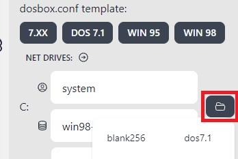

Bundle creation
Starting from js-dos v7, the API expects a js-dos bundle that already contains all configuration needed to start the DOS program. js-dos bundle is just a ZIP archive that contains the game itself and a js-dos configuration file (same as dosbox.conf file). For example, digger.jsdos contains:
You can generate a js-dos bundle programmatically. But we recommend you use our bundle generator
How to create bundles for DOS and Windows 95
Tutorial Video:
Обучающее видео:
Как крафтить игры от NicCarter54:
To create a bundle, you need to perform the following steps:
1. Create an empty bundle and select dosbox configuration
To do this, press on "Create empty bundle" link. 
Now you need to select one of the available configurations or write your own. 
7.xx is the best option if your program is a plain DOS program. It is also compatible both with js-dos v7 and v8.
2. Run emulator and add program files
Press the "Run" button. 
When the emulator is started, open the File System panel using the disk icon. Use upload file, or upload folder button to add your files to bundle File System.

3. Export result as js-dos bundle
To export use download button.

When a bundle is ready, the browser will prompt you to save it somewhere on your PC. Now when you have a bundle, go ahead and publish it somewhere.
Sockdrive bundles (Windows)
When you need to install Windows program, then you need to use sockdrive. These drives are located in js-dos cloud, and transfer only required data to browser. The way of creating the bundle is the same as described above. Except one thing: you need to create such a drive first.
After creating a drive, you need to attach it to your configuration. Use "Browse" button for this, or enter drive manually.

Now you can start emulator and create bundle.
Now reload the page and load your bundle with load button.

When emulator is started, add files as explained before and mount bundle FS as some drive:
Boot Windows and copy files to it. They will be immidiately stored in a js-dos cloud. So any next boot will have them no need to reexport a bundle.
Advanced configuration
.jsdos/dosbox.conf
This file is a regular dosbox configuration. Not all features are supported, but we will work on it.
.jsdos/jsdos.json
This file contains additional configuration that does not exist in the dosbox configuration file. For example, it's used to configure virtual controls. If you used game studio to create bundles then it will also contain all information from dosbox.conf. And it looks like:
This file can contain any configuration that you want. You can access it with Command Interface. For example:
This snippet will print information about gestures that config has. It's a very powerful feature, it can be used to add new optional features to js-dos.
Game Studio
Game Studio is a recommended tool for creating js-dos bundles.
js-dos bundles generated with a game studio always support the latest features that js-dos have. It generates configuration files for you.
Bundle generated by game studio is not licensed, you can use them whatever you want.
Open Game Studio v8
Open Game Studio v7